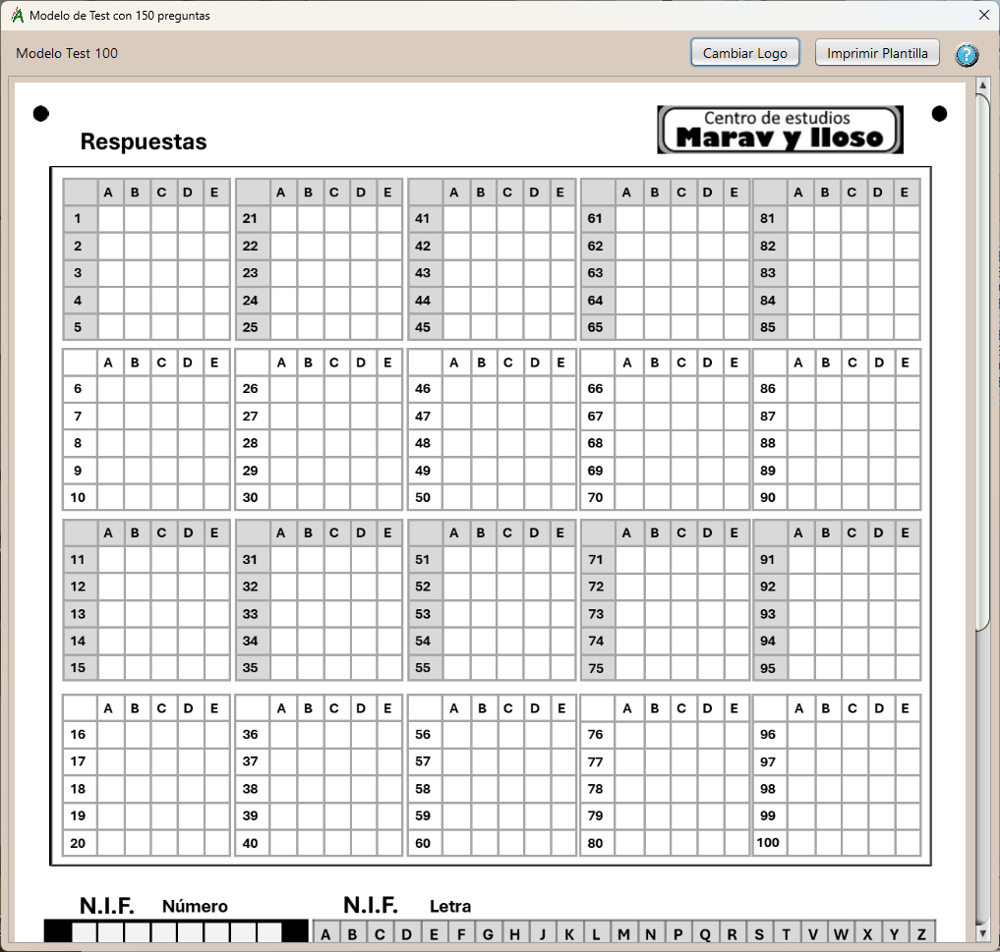

Hoja de Respuestas
Modelo de hoja de respuestas.
El modelo se ha diseñado con una disposición de sus elementos orientada a facilitar la interpretación de las hojas y mejorar la precisión de los resultados.
Consta de cinco campos:
- Respuestas:
Hay 100 marcas de respuesta reconocibles. La cantidad efectiva usada se define en la tabla de tipos y equivalencias.
- N.I.F. (número):
Se utiliza para leer la parte numérica del N.I.F., los 8 dígitos.
- N.I.F. (letra):
Se utiliza para leer la letra del N.I.F.
- Test tipo:
Es un valor de 1 a 6 que identifica el tipo de test, se admiten hasta seis. Es imprescindible para corregir los test, ya que con él y la tabla de equivalencias se identifican las respuestas con relación al tipo maestro.
- Grupo:
Un campo opcional que se puede usar para identificar/clasificar los test. También es un valor de 1 a 6.
Además de los campos anteriores hay otros como el nombre, apellidos, etc, que no se interpretan pero son necesarios para la correcta identificación de los examinados, atender a posteriores resclamaciones y demás.
También se incluyen unas breves instrucciones para rellenar correctamente la hoja de respuestas y evitar los errores de lectura/interpretación en lo posible.
En esta pantalla de la aplicación podemos ver el modelo de test, ya detallado. Además podemos hacer dos acciones importantes mediante sendos botones adicionales:
- Cambiar Logo:
Cambia el logo del formulario por uno de nuestra elección. Es importante que el tamaño en píxeles sea el mismo, ya que si no se reescalará, para evitar deformar el modelo. El tamaño ha de ser de 256 por 50 píxeles.
- Imprimir Plantilla:
Al pulsar este botón, aparecerá el diálogo de impresión del sistema, desde donde podremos imprimir las hojas de respuesta que necesitemos.